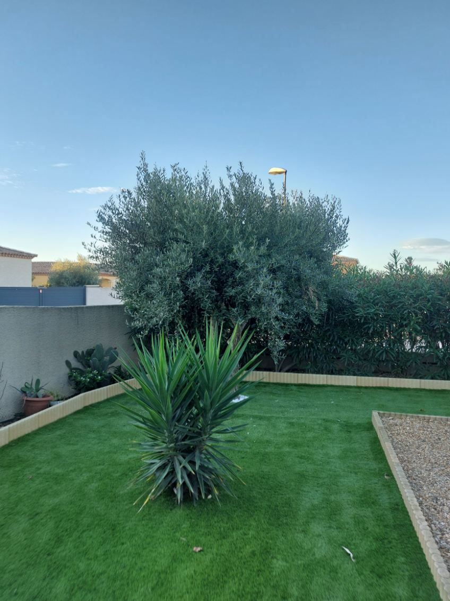
Entretien de jardin
Tonte, désherbage et ramassage, en passage ponctuel ou avec un forfait d'entretien à l'année.
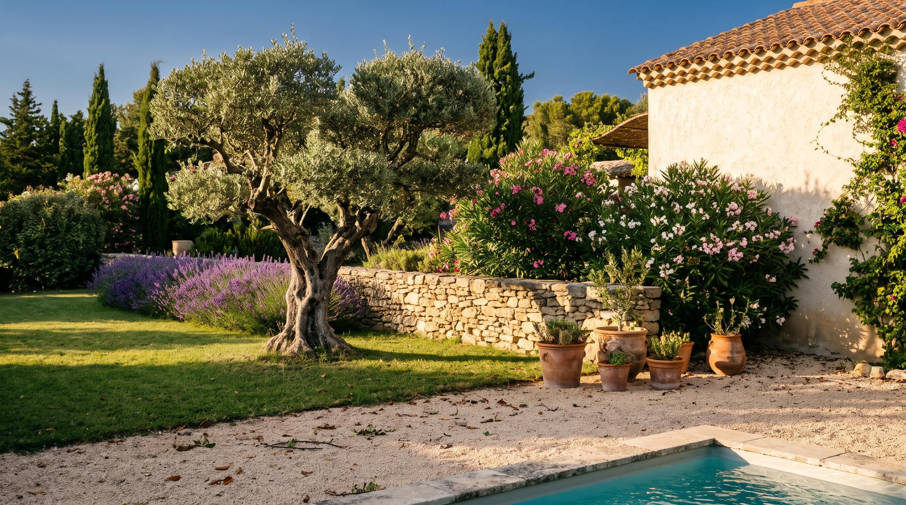
Paysagiste à Béziers et alentours
Entretien, taille de haies, élagage, débroussaillage et création de jardins. Dimitri Mateus se déplace chez vous, à Béziers et jusqu'à 50 km autour.
Demander un devisVoir ses jardins
5/55 avis Google
Devisgratuit
50 kmautour de Béziers
Merci, nous vous rappelons sous 48 h.
Services
Passage ponctuel ou forfait d'entretien à l'année : chaque intervention est chiffrée après une visite gratuite.

Tonte, désherbage et ramassage, en passage ponctuel ou avec un forfait d'entretien à l'année.
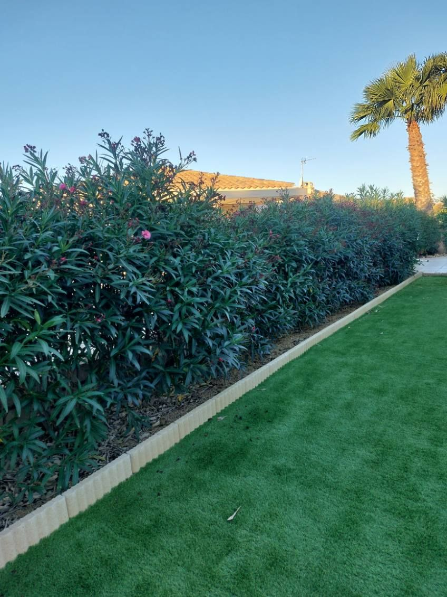
Haies et arbustes taillés au bon moment de l'année, pour garder une forme nette et une plante en bonne santé.
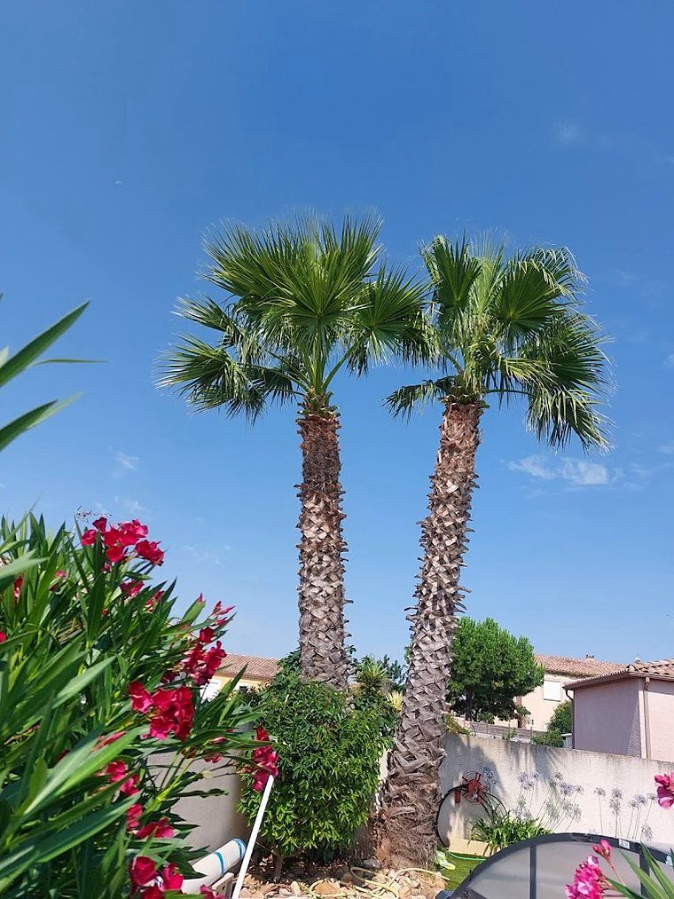
Oliviers, palmiers et grands arbres : taille, élagage ou abattage, avec évacuation des déchets verts.
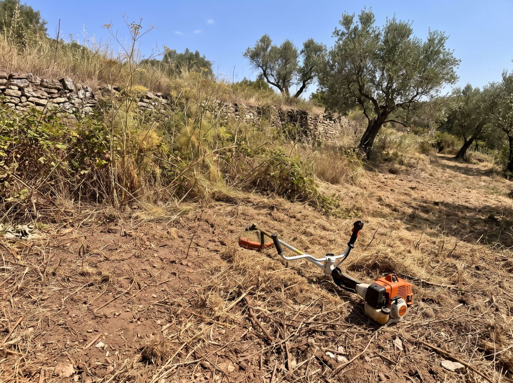
Terrains, talus et parcelles envahies remis au propre, pour les particuliers comme pour les professionnels.
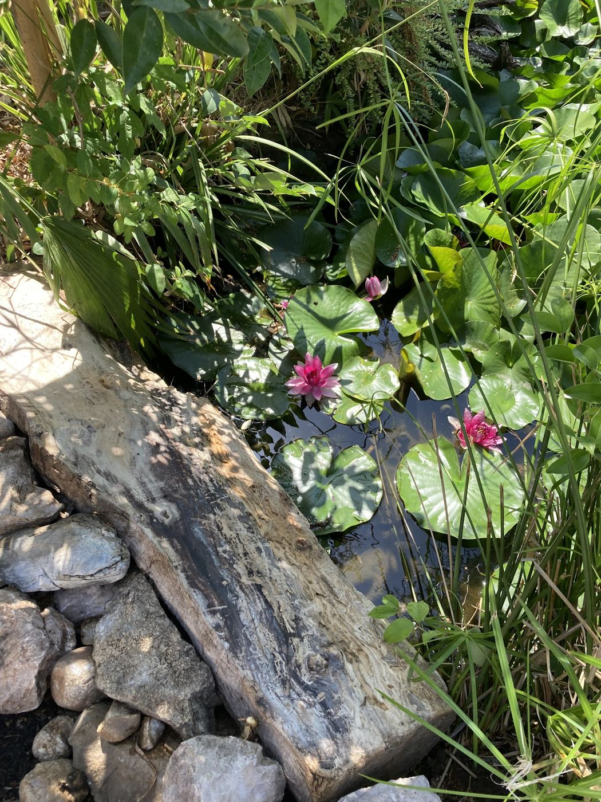
Aménagement, plantation d'arbres, d'arbustes et de massifs adaptés au soleil et au climat du Biterrois.
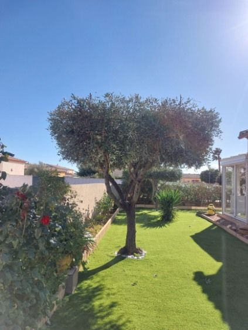
Création de pelouse, pose de gazon en plaques ou semis, et arrosage.
Réalisations
Quelques jardins dont Dimitri s'occupe, photographiés par lui et par ses clients.
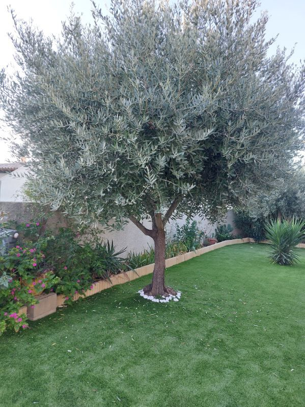
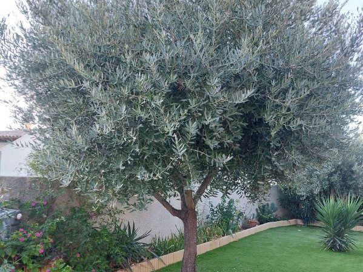
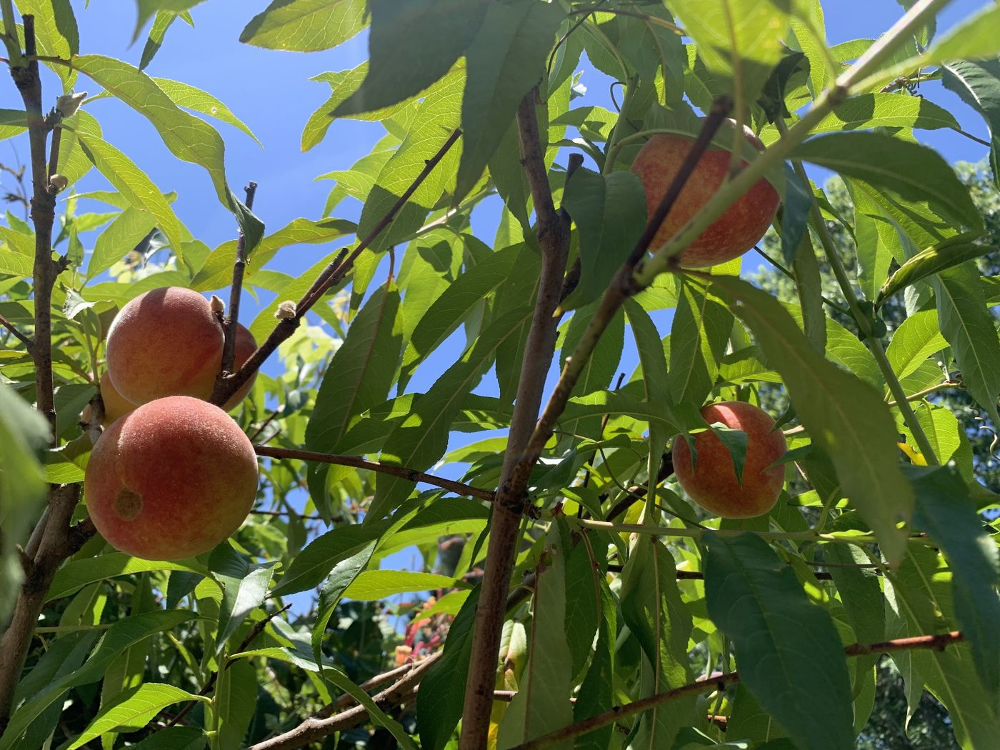
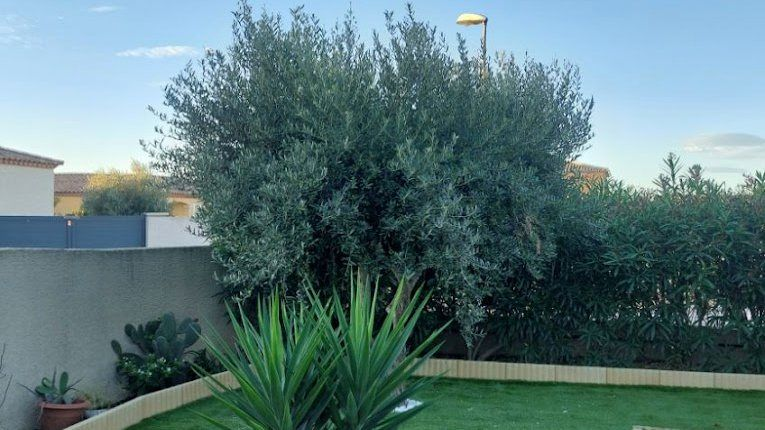
Avant / après
Faites glisser le curseur pour comparer.
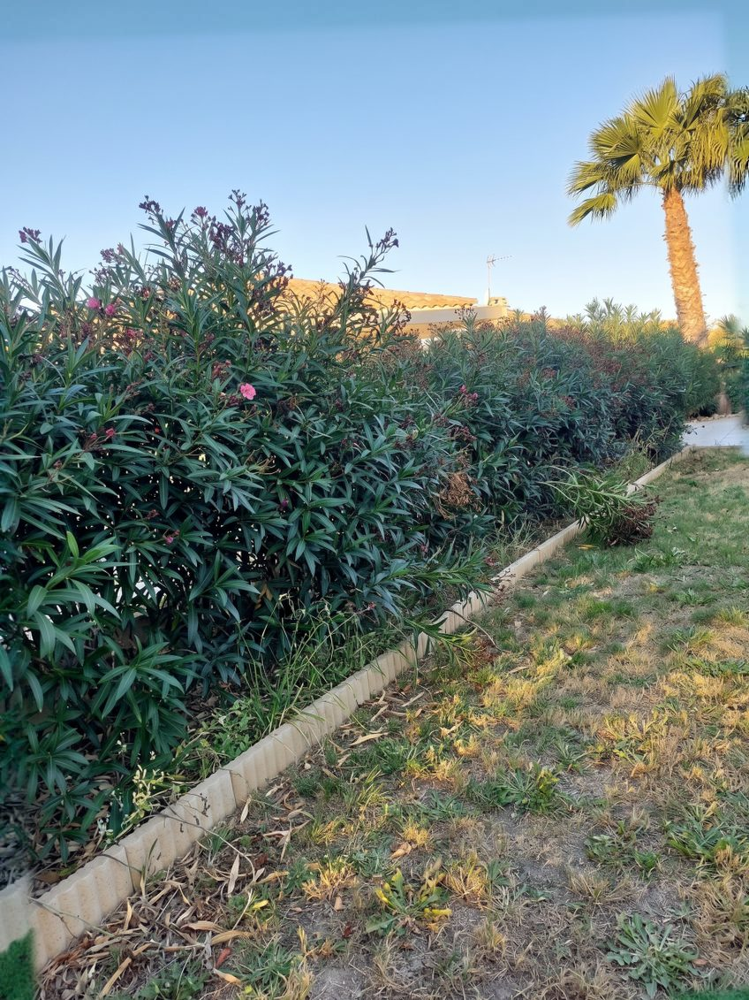
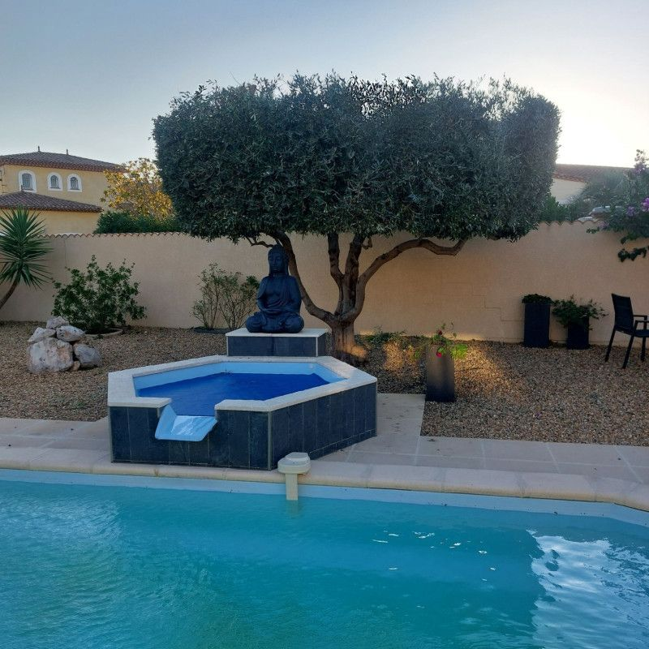
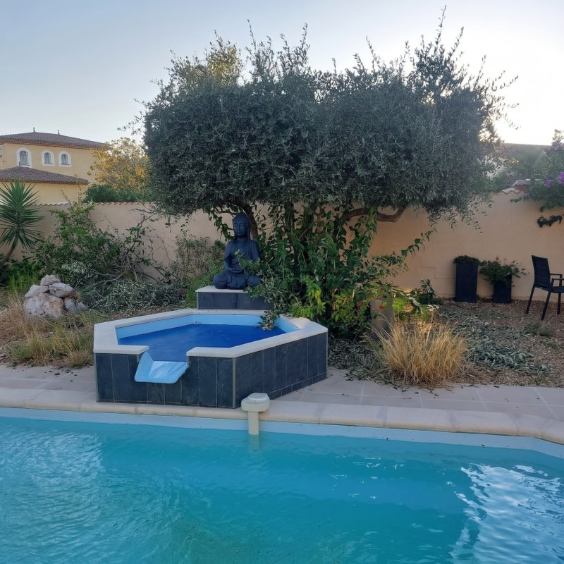
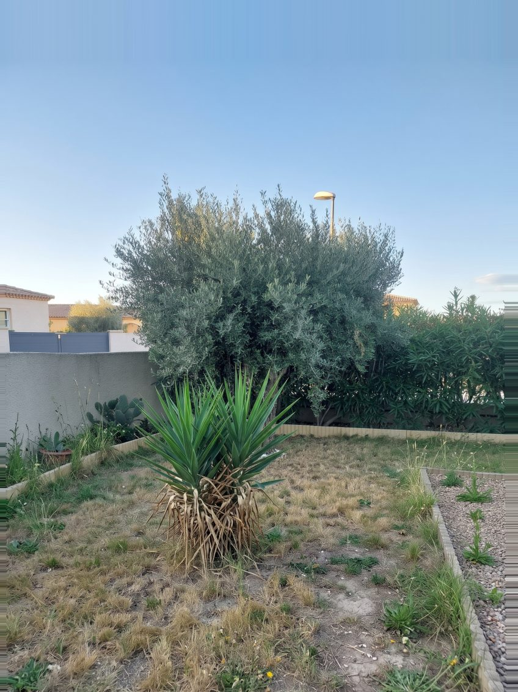
Avis clients
Les avis laissés par ses clients sur sa fiche Google. Voir les avis sur Google
★★★★★
Très satisfait du travail réalisé dans mon jardin. Dimitri a fait un excellent travail, propre et soigné. Très professionnel et à l'écoute. Je recommande sans hésiter !
★★★★★
Excellent travail, je vous recommande. Dimitri entretient notre jardin depuis de nombreuses années.
★★★★★
Personne sérieuse et appliquée dans son travail. Et toujours disponible et à notre service.
★★★★★
Je vous conseille ce jeune homme, très sérieux au travail, travail très bien fait. Très content de son boulot.
★★★★★
Je tiens à vous remercier pour la qualité de votre travail et votre professionnalisme.
Notre méthode
Pas de commercial ni de sous-traitant. C'est Dimitri qui vous répond, vient voir votre jardin, établit le devis et fait le travail.
Un appel ou un messageVous expliquez ce que vous voulez faire : entretien, taille, élagage, création.
Visite et devis gratuitsDimitri se déplace pour voir le terrain et vous remet un devis clair, sans engagement.
L'interventionUn travail propre et soigné, et les déchets verts évacués.
Le suiviPassage ponctuel ou forfait d'entretien à l'année, selon votre jardin.
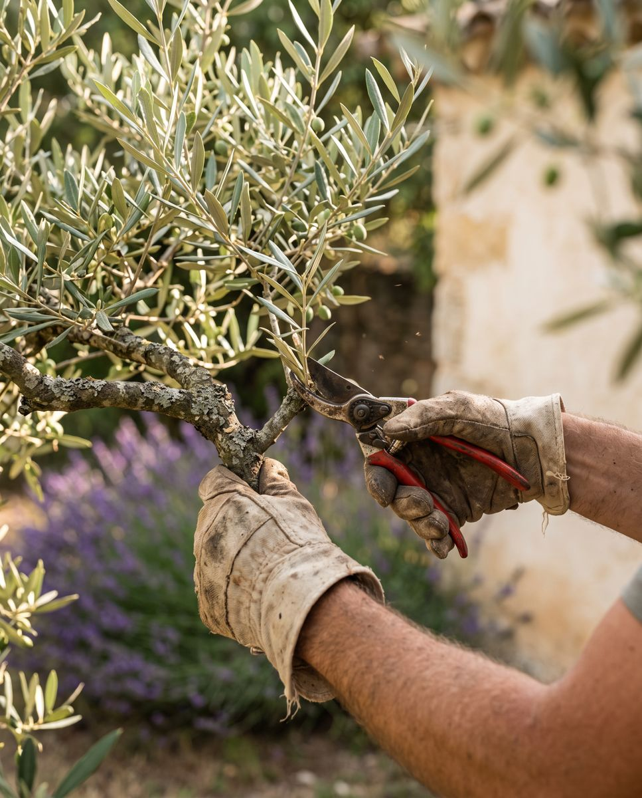
Nos engagements
Ce qui revient dans les avis laissés par ses clients à Béziers et alentours.
Dimitri vous répond, se déplace et réalise lui-même le travail.
Il répond vite et reste disponible pour ses clients.
Visite et devis gratuits et sans engagement, avant toute intervention.
Un travail fait avec soin, et un jardin laissé net après chaque passage.
Questions
Basé route de Maraussan à Béziers, Dimitri intervient dans un rayon de 50 km.
Oui. Dimitri se déplace pour voir votre jardin, et le devis est gratuit et sans engagement.
Oui : un passage ponctuel quand vous en avez besoin, ou un forfait d'entretien du jardin et des plantes tout au long de l'année.
À Béziers et dans un rayon de 50 km : Maraussan, Villeneuve-lès-Béziers, Sérignan, Valras-Plage, Pézenas, Agde, Narbonne…
Oui. En plus des particuliers, Dimitri intervient pour les entreprises, les parcs et les cimetières.
La plupart des haies se taillent à la fin de l'hiver et à la fin de l'été. Pour planter, l'automne est idéal dans le Biterrois : le sol est encore chaud et les pluies aident les plantes à s'installer avant l'été.
Il se déplace gratuitement pour voir votre terrain et vous faire un devis.